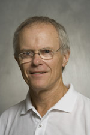

People
 Ted Christ, Co-Director:
Ted Christ, Co-Director:
Ted Christ (tchrist@umn.edu) is an Associate Professor in the Department of Educational Psychology and Co-Director of the Research Institute on Problem Solving (RIPS) at the University of Minnesota. His primary areas of research, teaching, and service relate to assessments used to support problem solving, response to intervention and progress monitoring. Dr. Chris has received more than $4 million in funding from the US Department of Education for research and development of assessments, which include Curriculum Based Measurement (CBM), Direct Behavior Ratings (DBR), and the Computer-Based Assessment System for Reading (CBAS-R). His research is reported in numerous peer-refereed outlets, national meetings, and book chapters. In 2008, Dr. Christ received the Lightner Witmer Award from Division 16 of the American Psychological Association for “exceptional potential and promise to contribute knowledge and professional insights that are of uncommon and extraordinary quality.”
Kristen McMaster, Co-Director:
Kristen McMaster (mcmas004@umn.edu) is an associate professor of Special Education in the Department of Educational Psychology at the University of Minnesota. Her research interests involve creating conditions for successful response to intervention of students at risk or identified as having disabilities, particularly in the areas of reading and written expression. Her research focuses on (1) promoting teachers' use of data-based decision-making and evidence-based instruction and (2) developing individualized interventions for students who for whom generally effective instruction is not sufficient.

Stan Deno:Stan Deno's (denox001@umn.edu) interests focused initially on developing a conceptual framework for viewing interventions as data-based problem solving. The research that followed has been directed toward empirically testing whether teachers using a problem solving approach are more effective in improving outcomes for students with academic disabilities. The bulk of that research has resulted in developing the Curriculum-based Measurement (CBM) progress monitoring procedures that are used as the data-base for problem solving.
Matthew Burns
Matthew Burns' research focuses on improving instruction for children with varying abilities and disabilities. I explore the application of learning and ecological theories to assessment and subsequent instruction. I am also interested in systemic change to reform the education of children with unique learning needs through measuring children’s response to intervention. Thus, I study curriculum-based assessment for instructional design, matching curricular material and student skill, problem-solving team, special education labels, and consultative service delivery for special education. Before joining the faculty at the University of Minnesota I was a faculty member for five years at Central Michigan University, a school psychologist for six years, and a special education administrator for one year. I currently serve as an associate editor of Assessment for Effective Intervention and am on the editorial board of School Psychology Review, Psychology in the Schools, and Remedial and Special Education.
Chris Espin:
Chris Espin (espinca@fsw.leidenuniv.nl) is a Professor in Orthopedagogiek (learning problems and youth care) at the University of Leiden, Leiden, the Netherlands. She is also an Adjunct Professor in Cognitive Sciences at the University of Minnesota. Prior to moving to the Netherlands, Dr. Espin was a Professor at the University of Minnesota in the department of Educational Psychology / Special Education. She was Principal Investigator and co-director of the Research Institute on Progress Monitoring (RIPM), a 5-year research institute funded through the U.S. Department of Education, Office of Special Education Programs. In addition, Dr. Espin was the Principal Investigator of a Field Initiated Research Project, also funded through the Office of Special Education Programs, “Creating a progress measurement system: Preparing secondary students with disabilities for success on standards tests.” Dr. Espin’s primary research interests are the development of Curriculum-based Measurement (CBM) procedures in reading, written expression, and content-area learning for secondary students with learning disabilities, and teachers’ use of CBM data.
 Jennifer McComas:
Jennifer McComas:
Dr. Jennifer McComas is a professor in the Department of Educational Psychology at the University of Minnesota where she directs the Urban Indian Education Partnership with the Minneapolis Public Schools and heads the teacher licensure program in the area of Emotional/Behavior Disorders. In 2009, the College of Education and Human Development bestowed upon Dr. McComas an endowed chair, the Rodney S. Wallace Professorship for the Advancement of Teaching and Learning, for her work in promoting academic and behavioral success for disadvantaged students, including Native American students, in the Minneapolis Public Schools.
Dr. McComas oversees a federally funded Leadership Training Grant in which she is preparing doctoral students to be leaders in the area of Response to Intervention, a three-tiered approach to promoting academic and behavioral success of K-12 students. Her research interests include the influence of behavioral mechanisms and social context on severe problem behavior and academic difficulties. Specifically, she has published research on the influence of establishing operations, schedules of reinforcement, matching theory, brief experimental analysis and intervention for struggling readers, and generalization and maintenance of behavior change.
Scott McConnell:
Scott McConnell (smcconne@umn.edu) is Professor of Educational Psychology and Child Psychology and a fellow of the Center for Early Education and Development at the University of Minnesota. Scott's research has focused, in part, on the development and application of General Outcome Measures for preschool children primarily in the areas of language and literacy development. As part of the Early Childhood Research Institute on Measuring Growth and Development, Scott and a team of Minnesota researchers developed and evaluated Individual Growth and Development Indicators, general outcome measures for preschool children. Subsequently, these measures were integrated into Get it, Got it, Go! a website for information and data management. He currently directs the Minnesota site of the Center for Response to Intervention in Early Childhood, a four-site center funded by the Institute of Education Sciences to conduct research and provide resources that support application of RTI in Early Childhood Education.
Sue Rose:
Susan Rose, Ph.D. (srose@umn.edu) is an associate professor at the University of Minnesota in the Department of Educational Psychology where she is the coordinator of the teacher training program in special education – Deaf/ hard of hearing. Her research has focused on the use of instructional practices particularly progress monitoring strategies and the use of computer-based technology on literacy development among children with hearing loss. She is the co-author of two widely used textbooks related to reading and language practices with deaf and hard of hearing students and a co-author of the Reading Milestones/ Reading Bridge series specifically designed for students with language differences.
Teri Wallace:
Teri Wallace (walla001@umn.edu) is an Associate Professor at Minnesota State University, Mankato. Prior to joining the faculty at MSU, Teri served as a Principal Investigator at the University of Minnesota's Institute on Community Integration. She has completed nearly 10 million dollars of contracted research work in the areas of progress monitoring, high school reform, school-wide improvement, school-to-work transition and development of systems to train and support paraprofessionals. She presents and consults nationally in the areas of response-to-intervention, development and use of general outcome measures for students with significant cognitive disabilities and teachers’ role in supervising paraprofessionals.